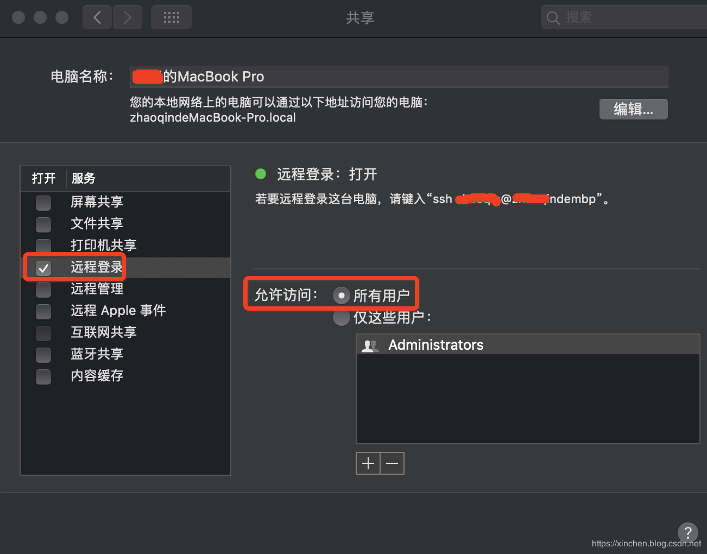

hadoop：3.2.1
在"系统偏好设置"->"共享"，设置如下：

ssh-keygen -t rsa -P '' -f ~/.ssh/id_rsa一路next，最终会在~/.ssh目录生成id_rsa和id_rsa.pub文件
cat ~/.ssh/id_rsa.pub >> ~/.ssh/authorized_keysLast login: Sun Oct 13 21:44:17 on ttys000
(base) zhaoqindeMBP:~ zhaoqin$ ssh localhost
Last login: Sun Oct 13 21:48:57 2019
(base) zhaoqindeMBP:~ zhaoqin$如果只需要hadoop单机模式，现在就可以了，但是单机模式没有hdfs，因此接下来要做伪分布模式的设置；
进入目录hadoop-3.2.1/etc/hadoop，做以下设置：
export JAVA_HOME=/Library/Java/JavaVirtualMachines/jdk1.8.0_211.jdk/Contents/Home<configuration>
<property>
<name>fs.defaultFS</name>
<value>hdfs://localhost:9000</value>
</property>
</configuration><configuration>
<property>
<name>dfs.replication</name>
<value>1</value>
</property>
</configuration><configuration>
<property>
<name>mapreduce.framework.name</name>
<value>yarn</value>
</property>
</configuration><configuration>
<property>
<name>yarn.nodemanager.aux-services</name>
<value>mapreduce_shuffle</value>
</property>
<property>
<name>yarn.nodemanager.env-whitelist</name>
<value>JAVA_HOME,HADOOP_COMMON_HOME,HADOOP_HDFS_HOME,HADOOP_CONF_DIR,CLASSPATH_PREPEND_DISTCACHE,HADOOP_YARN_HOME,HADOOP_MAPRED_HOME</value>
</property>
</configuration>./hdfs namenode -format初始化成功后，可见如下信息：
2019-10-13 22:13:32,468 INFO namenode.NNStorageRetentionManager: Going to retain 1 images with txid >= 0
2019-10-13 22:13:32,473 INFO namenode.FSImage: FSImageSaver clean checkpoint: txid=0 when meet shutdown.
2019-10-13 22:13:32,474 INFO namenode.NameNode: SHUTDOWN_MSG:
/************************************************************
SHUTDOWN_MSG: Shutting down NameNode at zhaoqindeMBP/192.168.50.12
************************************************************/(base) zhaoqindeMBP:sbin zhaoqin$ ./start-dfs.sh
Starting namenodes on [localhost]
Starting datanodes
Starting secondary namenodes [zhaoqindeMBP]
zhaoqindeMBP: Warning: Permanently added 'zhaoqindembp,192.168.50.12' (ECDSA) to the list of known hosts.
2019-10-13 22:28:30,597 WARN util.NativeCodeLoader: Unable to load native-hadoop library for your platform... using builtin-java classes where applicable上面的警告不会影响使用；
base) zhaoqindeMBP:sbin zhaoqin$ ./start-yarn.sh
Starting resourcemanager
Starting nodemanagers(base) zhaoqindeMBP:sbin zhaoqin$ jps
2161 NodeManager
1825 SecondaryNameNode
2065 ResourceManager
1591 NameNode
2234 Jps
1691 DataNode至此，hadoop3伪分布式环境的部署、设置、启动都已经完成。
进入目录hadoop-3.2.1/sbin，执行./stop-all.sh即可关闭hadoop的所有服务：
(base) zhaoqindeMBP:sbin zhaoqin$ ./stop-all.sh
WARNING: Stopping all Apache Hadoop daemons as zhaoqin in 10 seconds.
WARNING: Use CTRL-C to abort.
Stopping namenodes on [localhost]
Stopping datanodes
Stopping secondary namenodes [zhaoqindeMBP]
2019-10-13 22:49:00,941 WARN util.NativeCodeLoader: Unable to load native-hadoop library for your platform... using builtin-java classes where applicable
Stopping nodemanagers
Stopping resourcemanager以上就是Mac环境部署hadoop3的全部过程，希望能给您一些参考。